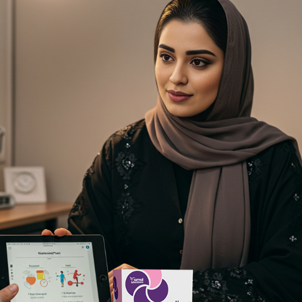
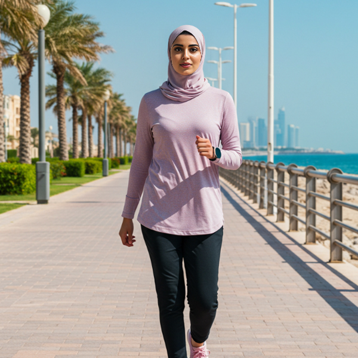

Laila from Stress to Hope
An inspiring journey full of challenges, from battling Polycystic Ovary Syndrome (PCOS/PMOS) to reclaiming health and achieving the dream of motherhood. Discover the details and see how challenges transformed into new opportunities for life.
Laila’s journey with Celine in overcoming PCOS/PMOS and achieving her dream of motherhood became a symbol of transformation from imbalance to balance.
Laila, a vibrant woman in her late twenties, had been silently struggling with Polycystic Ovary Syndrome (PCOS/PMOS) for years.
When she first visited my clinic, she appeared tired and discouraged. She shared how irregular periods were affecting her chances of conceiving, weight fluctuations left her feeling disconnected from her body, and frequent mood swings drained her energy and confidence.
After conducting tests and an ultrasound, I confirmed the PCOS/PMOS diagnosis. I explained the condition’s links to insulin resistance and oxidative stress—an imbalance caused by factors like pollution and stress, disrupting hormonal balance. Though new to the concept of oxidative stress, Laila felt relieved to finally understand the cause of her struggles.
We created a comprehensive plan that included Celine, a supplement designed to address PCOS/PMOS symptoms by improving insulin resistance, restoring hormonal balance, and reducing oxidative stress.

Alongside this, I encouraged her to adopt a healthier lifestyle, incorporating antioxidant-rich foods.
Along with maintaining a healthy diet and regular exercise, Laila started seeing noticeable improvements as the weeks went by. Her energy levels rose, she felt more in control of her body, and her menstrual cycles became regular.

Then, one day, she returned to my clinic with a glowing smile—her period was delayed, not due to PCOS/PMOS, but because she was pregnant! It was a moment of immense joy and triumph.
Laila’s journey with Celine stands as a testament to transformation, from imbalance to balance, and offers hope to others facing similar challenges.